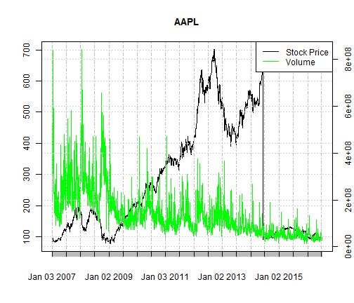

The stock price application allows users simple way to select any listed US stock and return the price and volume.
By comparing price and volume, the users can see trends and patterns over time.
Stock Price & Volume App
Using Shiny Apps to Allow Users to Check Price & Volume of Stocks
ES Data Science
Application Summary
User Interface

Future Plans
In the future, additional features will be added to the application such as:
- Correlation between stock price and other key metrics
- Premium features for paid user accounts
- Stock analysis and recommendations
Start Using Today!
Use the app today and stand by for new developments!
